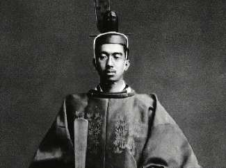
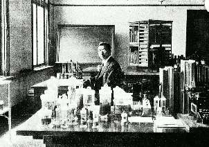

Борис Акунин
Мой календарь
Сегодня отличный момент, чтобы задуматься, тем ли вы занимаетесь в жизни. И может быть, взять да повернуть на другую дорогу.
Если вы ждете приближения уикенда и отпуска с радостным нетерпением, значит, вам лучше делать какую-то другую работу. Даже если ваша служба престижна, высоко оплачивается и хорошо смотрится со стороны.
Потому что в любом случае она менее импозантна, чем должность, которую много лет занимал человек, день рождения которого сегодня отмечается. В течение шести десятилетий эта дата даже являлась государственным праздником.
Японский император Хирохито взошел на престол совсем молодым человеком, в 25 лет, за его феноменально долгое царствование (1926 - 1989) сменилось несколько эпох. Страна превратилась сначала в мощную военную империю, потом в развалину, потом в передовую индустриальную державу. Хирохито исправно выполнял свои нудные церемониальные обязанности, сохранял величавость на заседаниях и парламентских сессиях, совершал государственные визиты и перерезал ленточки, но настоящая жизнь, увлекательная и полная волнующих открытий у его величества происходила за закрытыми дверями. На самом деле призванием микадо была морская биология, она являлась интересом всей его жизни. В своей превосходно оборудованной лаборатории Хирохито исследовал моллюсков и открыл 97 новых видов текатных гидрозоев (не спрашивайте, что это такое, но в научном сообществе императора за это очень уважали).
А представьте себе, сколько гидрозоев наоткрывал бы Хирохито, если бы в молодом возрасте послал к черту постылую императорскую службу и всецело занялся любимым делом. И прожил бы намного более счастливую жизнь.
Может быть, поэтому его сын и наследник император Акихито (1989–2019), которого отец тоже увлек морской биологией, в конце концов и отрекся от престола. Занялся лучеперыми рыбами.
Не будьте, как император Хирохито. Будьте, как император Акихито.
Надо заниматься только тем, что делает тебя счастливым. Если вы не монарх, это сильно облегчает задачу.